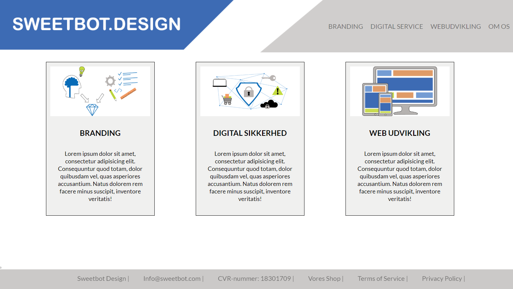
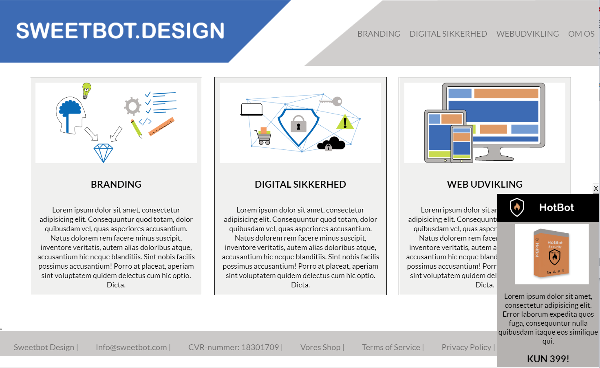

Hvad har jeg lært under forløbet?
Sweetbot projektet var vores første gruppeprojekt, hvilket jeg ofte kan have lidt svært ved. Da jeg ofte har nogle klare idéer, men ikke altid er så god til at få dem fortalt, og der derfor opstår misforståelser. Men vi valgte at bruge meget tid på WBS (Work Breakdown structure) og PBS (Product Breakdown structure), hvilket jeg aldrig har brugt før. Det var en god måde, til at sikre os at alle er med på hvad vi skulle nå i løbet af projektet. Desuden var det meget vigtigt (i opgave beskrivelsen), at vi havde styr på responsive design. Da nogle af de andre i gruppen havde svært ved det, brugte vi noget tid på at jeg hjalp dem med at kigge over skulderen. Derfra har jeg lært meget om, hvordan man skal forklare ting tydeligt og det har gjort at jeg har gjort at jeg nu har 100% styr på det.

Hvordan hænger det sammen med mit forhåndskendskab til emnet og denne opgavetype?
Jeg har jo førhen lavet gruppeprojekter, men når man ikke har arbejdet med folk før, kan det nogle gange være en svær proces. Men de førnævnte metoder gjorde processen nem, og vi var ikke tidspresset eller stresset på noget tidspunkt, fordi vi i forvejen havde gennemtænkt hvor meget tid vi skulle bruge på hver del.
Hvad forventede jeg at lære?
Jeg forventede at blive bedre til gruppearbejde og hvad det vil sige at skulle lave et produkt sammen. Derudover forventede jeg at lære GitHub, og hvordan det fungerer.

Hvad har jeg mere brug for at lære?
Vi fik aldrig GitHub til at fungere, og vi havde svært ved at få hjælp til det.
Hvad vil jeg foretage mig for at komme til at lære dette?
Jeg har tænkt mig at prøve at bruge GitHub til alle fremtidige projekter, da det er et redskab jeg meget gerne vil have styr på..